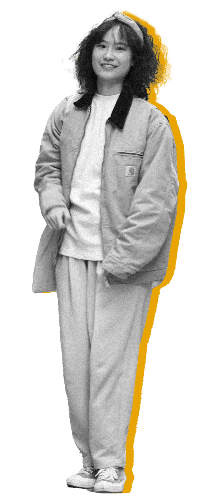

Hi there!
A Design for Interaction Master Graduate from TU Delft with a solid understanding of user research and design process. Strengths include critical thinking and experience in prototyping user interfaces. Possess foundational coding knowledge and basic proficiency in front-end languages (HTML, CSS, JavaScript). Able to bridge the gap between design and development teams and continuously strive to enhance my coding skills. Seeking a new challenge as a junior UX designer/researcher in the digital product industry.